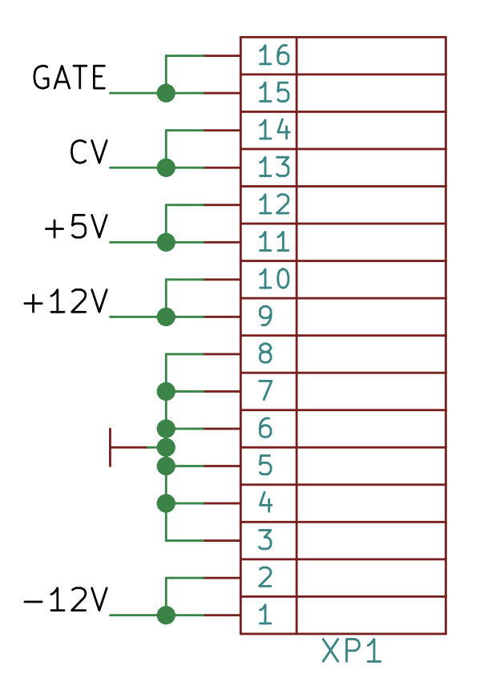
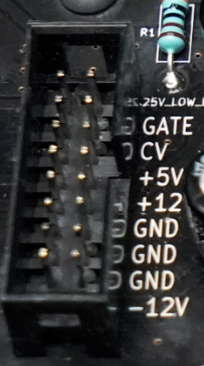

Building a Synthesizer, 2
Building the Power Supply
- Introduction: The World of DIY Synthesizers
- 1: The mki x es.EDU DIY System
- 2: Building the Power Supply
- 3: Breadboarding the VCO
- 4: A Gentle Introduction to Op Amps
- 5: Building the VCO
- 6: The Logic Circuits Model of Computation
- 7: Building the Mixer
- 8: Building the Envelope Generator
- 9: A Field Guide to Oscillators
- 10: Building the VCA
- 11: Debugging Circuits and Software Debugging
- 12: Breadboarding the VCF
- 13: Building the VCF
- 14: Building the Sequencer
- Glossary and Electrical Connections
I decided to build the power supply first, so that I could use it when building the other modules. That’s not strictly necessary; you can power them with a pair of 9V batteries (while building) if you like, but I was going to want a functional enclosure and power supply eventually anyway, so this seemed like a good place to start.
Unlike most of the other kits in the series, Moritz Klein did not write the manuals (or design the circuit, I think), and this manual, unlike most of the others, is a “solder everything onto the board” affair instead of a “here are the tradeoffs with different components” and encouraging you to experiment around with a breadboard. Understandable (especially considering there is less “room for experimentation” when dealing with power), but probably not the most compelling introduction to the series.
However, I do think we can learn about (modular) synths from building this project!
Eurorack Format
As I metioned in the glossary, there isn’t really a “Eurorack standard.” It’s more like, “look at what Doepfer did on the A-100 and do something similar.” If we want to build a “Eurorack compatible” enclosure and power supply, there are a few things to consider.
The physical form factor, or the size of the modules. Eurorack modules are (mostly!) 3U (three rack units, or 128.5 mm) high, and their widths are “quantized” by “HP,” or Horizontal Pitch units. This means they are usually some multiple of 5.08 mm wide. The mks x es.EDU modules range from 4 to 10 HP. See the Construction Details document on Doepfer’s site for the closest thing there is to a standard.
The power requirements. The Eurorack power bus has a 16 pin connector for each module. However, it’s very, very common for modules to not use the first 6 pins and only have a 10-pin connector on the “module” end of the power cable.
  At the left is a pinout from the mks x es.EDU schematic. To the right is a picture of one of the 14 sockets in the mks x es.EDU power supply, which you can connect to a single module.
{kind=link}
{kind=link}
The first thing you’ll notice is there’s a lot of redundancy there. The connectors are 16 pins, organized into two columns of eight pins each. Each two-pin “row” carries exactly the same signal; they are connected together. Furthermore, there are three rows (six pins total) of ground pins, which, again, are connected together.
Most modules do not use, and don’t even include wires for, the Gate and CV on the bus, requiring you to connect the Gate/CV through the front panel of the module. Similarly, +5V power is simply not needed by most modules.
So when on the order page for the case it says:
NB! The enclosure & PSU are designed specifically to accommodate DIY modules from mki x es.edu series and are not compatible with other eurorack modules.
I think it means two things:
- The case is pre-drilled to accomodate modules of certain widths in a specific order. Nothing you couldn’t fix with a drill and a tap, but worth noting.
- The kit doesn’t include components for the +5V power, although it does have space/holes for them on the PCB and most modules don’t need +5V anyway.
Other than those two caveats I think this case would work fine for most 3U Eurorack modules.
The Technical Details document on Doepfer’s site is informative if you’d like to know more about the system which other “Eurorack” manufacturers are using as an example.
Building the Power Supply
I’ll be perfectly frank that this kit is not the one which is going to teach you much about electronics.
It would be closer to the truth to say that this one will help teach you patience! There are, for example, 14*16=224 solder joints to connect the power cable adaptors alone. After soldering these, I tested them with both a digital multimeter in continuity mode and by putting cables repeatedly into and out of the adaptors. I did not solder every single joint perfectly on the first try (surprise!), so I fixed those which didn’t work.
Throughout assembling this kit, I had problems with soldering connections to ground; the ground inside the PC board is apparently a large chunk of copper and it was challenging to get it hot enough to melt solder even when the component you were soldering to it was plenty hot and at risk of cooking. It took a lot of patience and mostly a lot of testing to make sure that everything worked.
The instructions said to increase your soldering iron temperature to 400℃ to solder wires to the power plug. I left it there when soldering the switch and melted something inside the switch. I bought a new switch and some spade connectors, and soldered the switch wires to the spade connectors instead and then pushed the spade connectors onto the (new) switch, which worked quite well.
One minor challenge is that the +/- leads of the LEDs were not, as far as I could make out, indicated on the PCB; I had to refer to the schematic to figure out which way to put the LEDs into the board.
Building the +5V Power Supply
{kind=link}
The PCB comes drilled for parts for a +5V power supply (to pins 11 and 12 of the power sockets), but does not include parts for this. Wanting “the full experience” I sourced the parts from a local supplier (details below) and built this as well. Despite some vagueries about precisely which parts to buy, everything worked, except for the LED. I eventually figured out that the problem was getting the ground connection on the PCB hot enough to really melt solder; I had been hesitant to hold the soldering iron to the LED for the 30+ seconds it took to heat up the connection inside the board. But in the end it worked fine and now the LED lights up indicating +5V power is on.
However, there is another problem with the +5V power supply, and it’s not me this time. Some of the holes for the +5V components fall under the power sockets for modules! I ended up soldering a capacitor to the bottom of the board, and the power regulator is not quite squarely mounted. (See photo at right; there are two capacitors visible on top of the board and a third which is immediately above them mounted under the board; you can see one of the two pins just peeking out from under the black module power connection, immediately above the power regulator pins. Note also that the power regulator is being somewhat pushed off of its heatsink pad by the module power connector above it.) It works fine, but I feel like I’m probably the first person to ever assemble this.
Additional Supplies Needed
If you want to add +5V power to your power supply, you will need to buy:
- 2 0.1 µF capacitors, non-polarized (voltage and type unspecified; I used 50V mylar capacitors)
- 1 10 µF polarized capacitor, 16 V (I used a 50V capacitor because that’s all my supplier had)
- 1 1k Ohm resistor (wattage unspecified, I used a 1/2 W, which ended up being slightly too long for the pre-drilled holes in the PCB, so I’m guessing it was designed for a 1/4 W resistor?)
- 1 5V LED (I used a green 4V LED as that’s what my supplier had)
- 1 78M05 5V voltage regulator, or equivalent (the current is unspecified; my supplier had a 1A in stock, so that’s what I used)
All together this cost me about $10.
As you will see, there is considerable vagueness in the bill of materials above! I listed what I used, and these values seem to work, although I haven’t tried putting any real load on the circuit. One suggestion I would make for this kit is to fill in the missing values here!
In the next installment of this series I’ll breadboard the VCO.
Resources
Instructions
Product Pages
Videos
- DIY SYNTH PSU: How to design a simple dual power supply by Moritz Klein (26:03). Note that this is for a different design than the one included in the kit! It’s sort of useful, although you can skip this video if you want to.